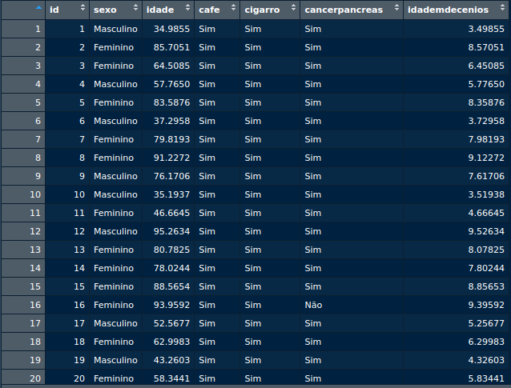
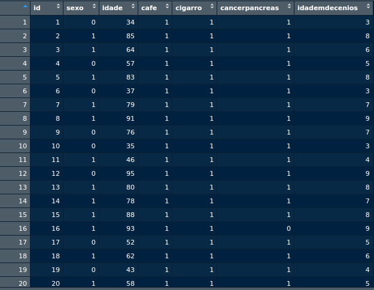
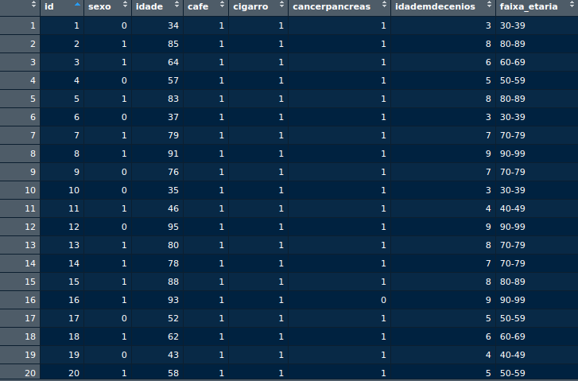
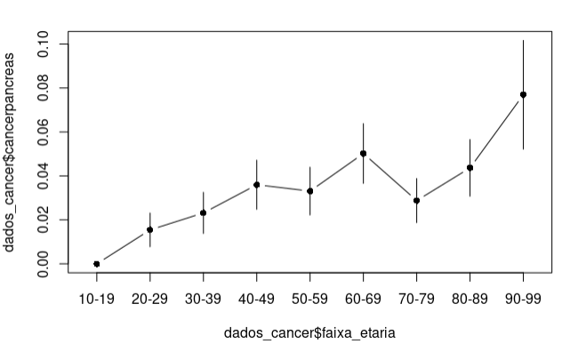
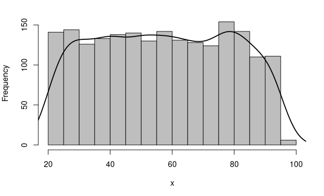

script_projeto
meu script, meu projeto
Porque desta atividade?
Praticar as habilidades ensinadas no curso em projeto com dados reais de pesquisa na área de saúde, neste exemplo sobre Câncer de Pâncreas.
Nesta pesquisa queremos averiguar as associações entre o desfecho Câncer de Pâncreas e os hábitos que foram levantados (idade, sexo, bebe café, fuma) na coorte de indivíduos.
Dicas aulas -
O que fazer com um banco de dados de pesquisa?
Realizar transformações versáteis que facilitam análises de dados para diferentes estudos:
Manipulação
Análise descritiva
Avaliar e testar modelos estatísticos
Como
Seguir as instruções abaixo:
Cada discente terá seu arquivo individualizado, você precisa baixar o arquivo com seu nome da página do curso ;
Criar um projeto no Rstudio, contendo o arquivo de dados do exercício com seu nome e
Fazer um script/quarto realizando as tarefas abaixo
- Vamos seguir o fluxo de ideias com perguntas…
Manipulando os dados
Seus dados estão adequados? Tem “sujeira”?
Umas das funções mais frequentes em projetos é transformar os dados:
Seus dados já estão limpos, campos categóricos foram transformados em numéricos para análises estatísticas?
- Você tivessem que fazer esse processo, como fariam?
Dicas aulas - 10, 33.Como esta?
- 
Como deve ficar?
- 
- Você tivessem que fazer esse processo, como fariam?
Desafio: criar coluna com faixas etárias e agroupar
Adicionar colunas novas?
Dicas aulas - 24- 
Analises descritivas
Já abordamos diversas bibliotecas para análises exploratórias no módulo 1 e após limpar os dados este é um bom momento para fazer este tipo de abordagem.
Nosso objetivo neste trabalho é seguir além, para esta segunda etapa comecem a verificar a interação entre as variáveis:
(sexo e cancer | café e cancer | faixas etárias e cancer)
Dicas Aulas - 14, 15, 19-1 e 19-2
Seus dados podem ficar diferentes, apenas um exemplo de referência:

Será que a sua população amostral é uniforme?
responda qual o tipo de população quanto a idade e sexo
Dicas aulas - 17, 18
Risco Relativo (RR)
Dicas aulas - 25, 26, 27, 28, 29
Criar tabelas de contigências com as variáveis de interesse
Dica extra - nestas horas podemos mesclar ou voltar a usar as tabelas originais para facilitar a criação das tabelas novas de contigência entre os dados inteiros e categóricos.
Avaliar modelos logísticos para câncer no pâncreas
Dicas aulas -30, 35, 37, 38, 41,
Qual das variáveis tem maior correlação com o câncer de pâncreas?
podem usar as aulas de regressão ´lm()´
Dicas aulas - 48, 49 e 50
Apresentar cálculo de regressão logística
podem usar exemplo da aula de regressão ´glm()´
Colocar um parágrafo de conclusão no seu relatório, usando seus dados, com as correlações, ou regressões ou valor-p.
Não estamos esperando um modelo de resposta ideal, o objetivo é vocês praticarem o método científico e aplicar os aprendizados no R, gerando um relatório ao final (no RStudio clicar no botão Render).
Devem usar este arquivo como referência.
Entregar o arquivo com seu script “script_projeto_Maria”, chamando os dados com seu Maria.csv, por exemplo. Aproveitem as ‘dicas das aulas’ que dão as referências para os exercícios.
Bom trabalho e semana.